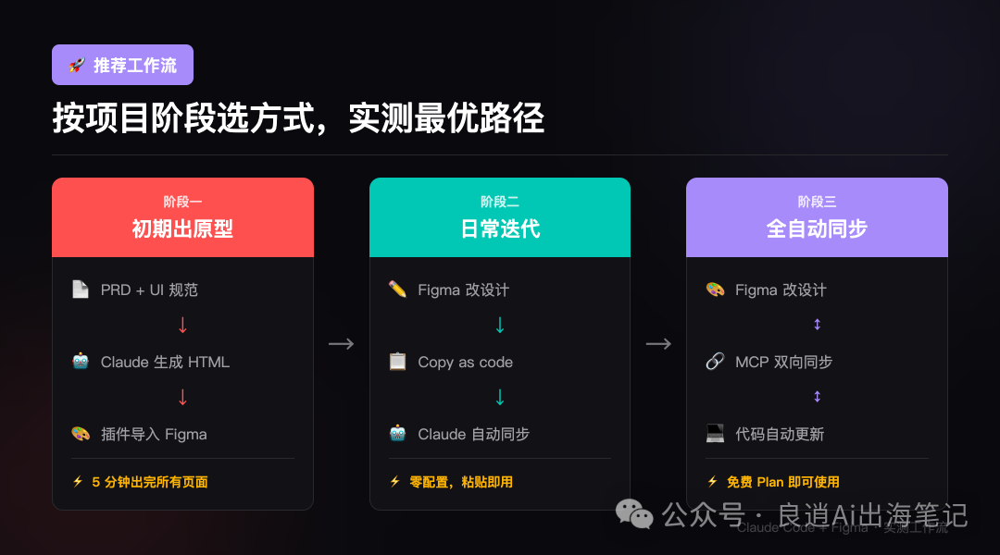

你听说过 Claude Code 和 OpenClaw 吗？
一篇真正讲清楚的科普，从零开始，不懂代码也能读完
AI 工具的新玩法
最近两年，AI 工具多到让人眼花缭乱。
但大多数人用 AI 的方式，还停留在"聊天"层面——问它问题，它给你答案，你自己再去执行。
Claude Code 和 OpenClaw 代表的是另一种玩法：
你说要什么，AI 直接帮你做完。
AI 助手的两个阶段
AI 是顾问，执行还是你自己来
你说目标，AI 执行，你检查结果
第一阶段示例：
你问它"怎么写一封道歉邮件"，它告诉你思路和范文，你自己复制、粘贴、修改、发送。
第二阶段示例：
你说"帮我把收件箱里今天所有关于项目进度的邮件整理成一份摘要，发到我飞书"，AI 直接读邮件、整理、发送，一气呵成。
你在终端里的 AI 程序员
Claude Code 就是这个实习生。只不过它住在你电脑的命令行（终端）里。
它具体能做什么？
和 Cursor、Trae 有什么区别？
Cursor 和 Trae 是"增强版编辑器"——你还是在写代码的主驾驶座上，AI 实时给你补全建议。
Claude Code 是"全权委托"——你坐在后排，告诉 AI 目的地，它自己开车。
| 维度 | Claude Code | Cursor | Trae |
|---|---|---|---|
| 形态 | 命令行工具 | 代码编辑器 | 代码编辑器 |
| 操作模式 | AI 主导执行 | 你写，AI 辅助 | 你写，AI 辅助 |
| 上手门槛 | 较高 | 低 | 低，中文友好 |
| 费用 | $20/月 + token | $20/月 | 目前免费 |
| 最适合谁 | 想把整件事交给 AI | 边写边获得 AI 建议 | 国内开发者，免费入门 |
💡 一句话建议
它怎么记住你的项目？
有个关键文件叫 CLAUDE.md：你可以把项目规范、技术栈、常用命令、代码风格要求都写进这个文件。每次启动 Claude Code，它会先读这个文件——就像新员工入职前先看公司规范手册。
7×24 小时在线的 AI 管家
它的出生故事
2026年初，奥地利程序员 Peter Steinberger 把这个项目开源发布到 GitHub。没有发布会，没有广告。一个 README 文件，一段演示视频——AI 帮他自动选车、迁移代码仓库、做了几周的信息调研。
有意思的冷知识：OpenClaw 这个项目从第一行代码到第一个可部署版本，100% 由 Claude Code 自动生成。AI 工具，是被另一个 AI 写出来的。
和 Claude Code 本质上有什么不同？
| 维度 | Claude Code | OpenClaw |
|---|---|---|
| 核心定位 | AI 程序员 | AI 管家 |
| 目标用户 | 开发者 | 所有人 |
| 使用入口 | 电脑终端 | 飞书 / WhatsApp / Telegram |
| 使用节奏 | 你在场，实时交互 | 你不在场，后台自动执行 |
| 能力边界 | 深：代码、文件、终端 | 广：任何接了 API 的服务 |
| 是否开源 | ❌ 闭源 | ✅ 完全开源 |
| 费用 | $20/月起 + token | 软件免费，自备 API Key |
OpenClaw 本身对技术要求有一定门槛。但国内有团队基于 OpenClaw 做了更易用的封装版：
EasyClaw（easyclaw.com）：零配置，无需自备 API Key，连上飞书就能开始。适合完全不懂技术的普通用户入门。
选模型看任务，不看产地
Claude Code 和 OpenClaw 本身只是工具框架，真正负责"思考"的是背后的大模型。就像手机是框架，iOS 或安卓是系统——大模型就是这里的"操作系统"。
国产主流模型推荐
Kimi（月之暗面）长文档处理首选
超长上下文处理能力国内最强，可以一次性读入整本书、完整代码库。中文阅读理解细腻，适合需要深入分析大量文字的场景。支持联网搜索，能获取最新信息。
适合场景：读长报告、分析完整代码库、整理大量会议记录、学术研究辅助
Minimax（稀宇科技）多模态+长上下文
多模态能力强，支持文本、图像、音频、视频处理。上下文窗口大，响应速度快。API 价格有竞争力，适合需要处理多种媒体类型的任务。
适合场景：多模态内容处理、音视频理解、复杂对话任务、AI Agent 应用
GLM（智谱 AI）综合能力强
清华系团队出品，综合能力均衡，代码、推理、创作都有不错表现。GLM-4 系列支持长上下文和多模态。开放开源版本，可本地部署，数据安全可控。
适合场景：通用任务、代码辅助、企业应用、需要私有化部署的场景
国产 vs 国外：怎么选？
| 任务类型 | 推荐选择 | 理由 |
|---|---|---|
| 处理超长文档 | Kimi | 长上下文专项 |
| 多模态内容处理 | Minimax | 支持音视频 |
| 通用任务 / 代码辅助 | GLM | 综合能力均衡 |
| 预算充足追求最强 | Claude | 综合能力天花板 |
| 数据不出境要求 | GLM 本地部署 | 开源可私有化 |
💡 一个实用的组合策略（适合国内用户）
三个模型全部国内直连，成本加起来可能不到用 Claude 一个月费用的 20%。
Claude Code 工作流模式
当前 Claude Code 支持的四种核心工作流模式，让你在不同场景下高效协作。

Claude Code + Figma 做产品原型
把 PRD 直接变成 Figma 原型——2026 年这条链路已经完全跑通，而且三种方式都免费。
三种协作方式总览：
| 方式 | 适合场景 | 是否付费 | 难度 |
|---|---|---|---|
| HTML 原型 + Figma 插件导入 | 从零画原型 | 免费 | 简单 |
| Copy as code → 粘贴给 AI | 设计改了同步代码 | 免费 | 最简单 |
| Figma MCP Server | 全自动双向同步 | 免费可用（有调用限额） | 中等 |
方式一：AI 生成 HTML 原型 → 导入 Figma
第一步：把 PRD 和 UI 设计规范丢给 Claude Code，说一句话：
Claude 会生成一个包含所有屏幕的 HTML 文件，每个屏幕是一个 390×844 的 iPhone 框架，并排排列。
第二步，两种方式导入 Figma 任选：
方式 A（推荐）：如果已连通 Figma MCP，直接告诉 Claude Code「启动���地服务器，把这个 HTML 捕捉到我的 Figma 文件里」，全程自动化。
方式 B：启动本地服务器 → 打开 Figma → 运行插件 html.to.design（Builder.io 出品）→ 输入本地服务器地址 → 点击 Import，所有屏幕一键变成可编辑的 Figma Frame。
方式二：Figma Copy as code（日常最实用）
设计改完后同步到代码最顺手的方式，完全不需要配置任何 MCP，零门槛。
Claude 会自动识别设计属性，把设计稿的改动同步到代码里。
方式三：Figma MCP Server（全自动双向同步）
Figma 官方 2026 年初发布的 AI 集成方案，支持设计和代码双向同步。
| Plan | 限额 | 说明 |
|---|---|---|
| Starter（免费） | 每月 6 次 | generate_figma_design 不占配额 |
| Pro | 每天 200 次 | 10 次/分钟 |
重点：generate_figma_design（把代码推送到 Figma）不受配额限制，免费用户也能无限次使用！
- VSCode 扩展里 OAuth 可能不弹出：先在终端 claude 里完成认证，再回 VSCode 就正常了
- npm 包装错了：Figma 官方的地址是 mcp.figma.com/mcp
- Free Plan 完全够用：generate_figma_design 不限次数，读取类工具每月 6 次
把重复劳动交出去
不会写代码的设计师，也能从 OpenClaw 受益。设计师每天有大量和设计本身无关的杂事：整理评审反馈、追踪竞品动态、同步进度……这些消耗时间，却不产生设计价值。
场景：定时推送竞品动态 + 设计资讯
配置一个定时任务，比如每周一早上 9 点，自动聚合竞品更新和设计行业动态，合并成一份简报推送到飞书。
信息来源可以自定义配置：竞品来源接 App Store 更新日志、ProductHunt；资讯来源接 Mobbin 博客、Nielsen Norman Group、Smashing Magazine、即刻设计频道等。
费用对比
Claude Code
| 使用强度 | 月费用估算 |
|---|---|
| 轻度（偶尔用，帮写小脚本） | $20（Pro 底价） |
| 中度（每天用，处理中等项目） | $30–60 |
| 重度（全天跑大型项目） | $60–200+ |
OpenClaw / EasyClaw
软件本身完全免费。费用来自你选择的大模型 API：
| 模型选择 | 月费用估算（中度使用） |
|---|---|
| Claude API | $15–40 |
| Kimi API | $3–10 |
| Minimax API | $3–8 |
| GLM API | $2–6 |
| 本地部署 GLM | 电费（几乎 $0） |
💡 结论
用国产模型驱动 OpenClaw，月费用可以低到 1–5 美元，而且数据不出境。
诚实说，这两个工具都还有坑
- Token 消耗难预测，跑复杂项目时费用可能超出预期
- 上下文有长度限制，超长项目容易"忘掉"前面的内容
- 生成的代码需要人工检查，不能完全信任
- 部分第三方 Skill 会在后台传输用户数据，安装插件要谨慎
- AI 可能在你不知情的情况下做超出预期的操作
- 配置和维护有一定门槛，出问题了排查并不容易
—— OpenClaw 维护者
先用 EasyClaw 这类封装版入门，权限设置上保守一点，不要一开始就给 AI 太多操作权限。
你应该怎么开始？
预算有限：先用 Trae + GLM，免费入门。
第一个任务：让它每周一推送竞品动态 + 设计资讯简报。
第一周只做一件事：让它每天早上整理昨天的消息摘要。
或选 Kimi/Minimax 企业版，满足合规要求。
核心要点
🎯 记住这三个关键点
🚀 AI 从"说"进化到"做"
以前的 AI 助手是个聪明的顾问——它告诉你"应该这么做"。
Claude Code 和 OpenClaw 代表的是：AI 直接帮你做完，你只需要说清楚目标，检查结果。
延伸阅读
Claude Code：docs.claude.com
OpenClaw：github.com/openclaw/openclaw
EasyClaw：easyclaw.com
Kimi：kimi.moonshot.cn
Minimax：minimaxi.com
GLM：bigmodel.cn